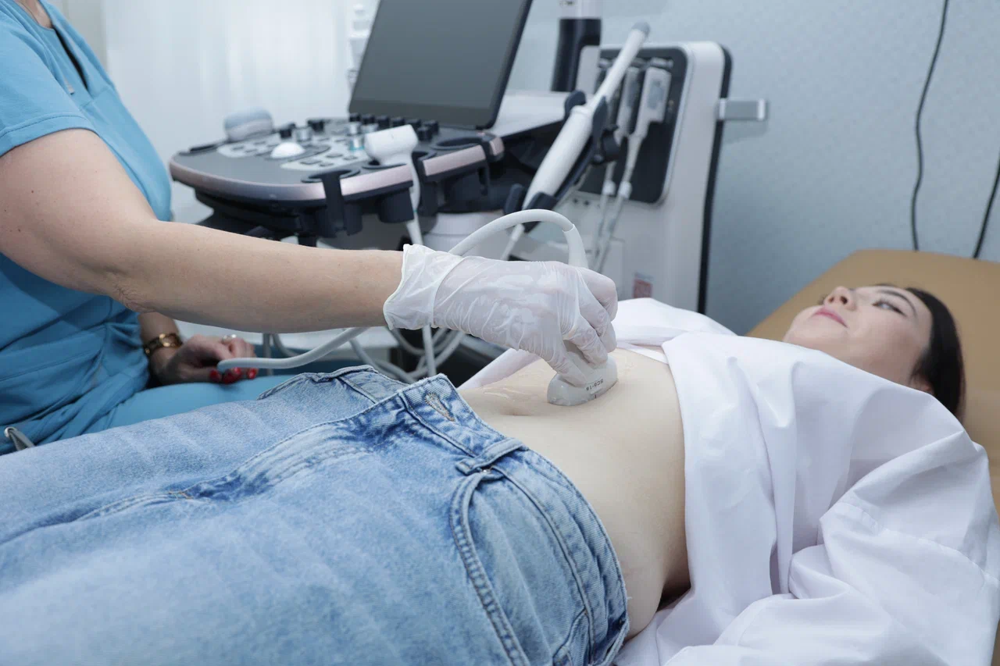

Показания
На согласованииПеречень ситуаций, в которых назначают исследование, — на согласовании.
Ультразвуковые исследования
внутренних органов
В медицинском центре Мед-ЭКСПРЕСС
с. Аргаяш, ул. Ленина, 50

Общее УЗИ — направление ультразвуковых исследований внутренних органов в нашем центре.
При записи назовите нужное исследование. Администратор уточнит, проводится ли оно в центре, его стоимость и доступное время.
Временное наполнение. Показания и ограничения должен подтвердить медицинский центр.
Перечень ситуаций, в которых назначают исследование, — на согласовании.
Возрастные группы и особенности обследования — на согласовании.
Ограничения и условия проведения исследования — на согласовании.
Макет состава услуги. Точный перечень исследований и результатов пока не заполнен.
Какие органы и области входят в выбранную услугу — на согласовании.
Что оценивает специалист и какие измерения проводит — на согласовании.
Состав заключения и дополнительных материалов — на согласовании.
Уточните требования к вашему исследованию заранее.
При записи сообщите название исследования и попросите уточнить подготовку. Не используйте одну общую памятку для всех видов УЗИ.
Уточнить подготовкуРекомендации по подготовке выдаёт медицинский центр для конкретного исследования.
Место для утверждённой памятки. Ниже нет действующих медицинских рекомендаций.
Требования за несколько дней до исследования — после утверждения врачом.
Правила питания, питья и другие условия — после утверждения врачом.
Что взять с собой и какие условия соблюсти перед исследованием — после утверждения врачом.
Макет этапов. Содержание и продолжительность уточняются у медицинского центра.
Порядок подготовки в кабинете и общения со специалистом — на согласовании.
На согласованииОписание проведения УЗИ и его длительность — на согласовании.
На согласованииЗавершение приёма и порядок получения документов — на согласовании.
На согласованииСроки и формат выдачи результатов пока не подтверждены.
Состав заключения, снимков и других материалов — на согласовании.
Срок выдачи документов — на согласовании.
Способ выдачи и порядок получения пояснений — на согласовании.
Выберите нужное исследование в утверждённом прейскуранте.
При записи администратор уточнит подготовку, состав услуги и доступное время.
ТРУЗИ с определением объёма остаточной мочи
Полный прейскурант, включая УЗИ сердца, сосудов, суставов, исследования для женщин, беременных и детей, размещён на странице цен.
Какой специалист выполняет нужное вам исследование, уточняйте при записи.
Через кнопку «Записаться на УЗИ» или по телефону +7 (961) 795-87-59. Укажите, какое именно исследование вам нужно.
Уточните длительность выбранного УЗИ у администратора перед записью.
Срок и формат выдачи результатов уточняйте в центре для конкретного исследования.
с. Аргаяш, ул. Ленина, 50. Посмотреть адрес на карте.
с. Аргаяш, ул. Ленина, 50
Пн–сб 8:00–16:00 · вс 9:00–13:00